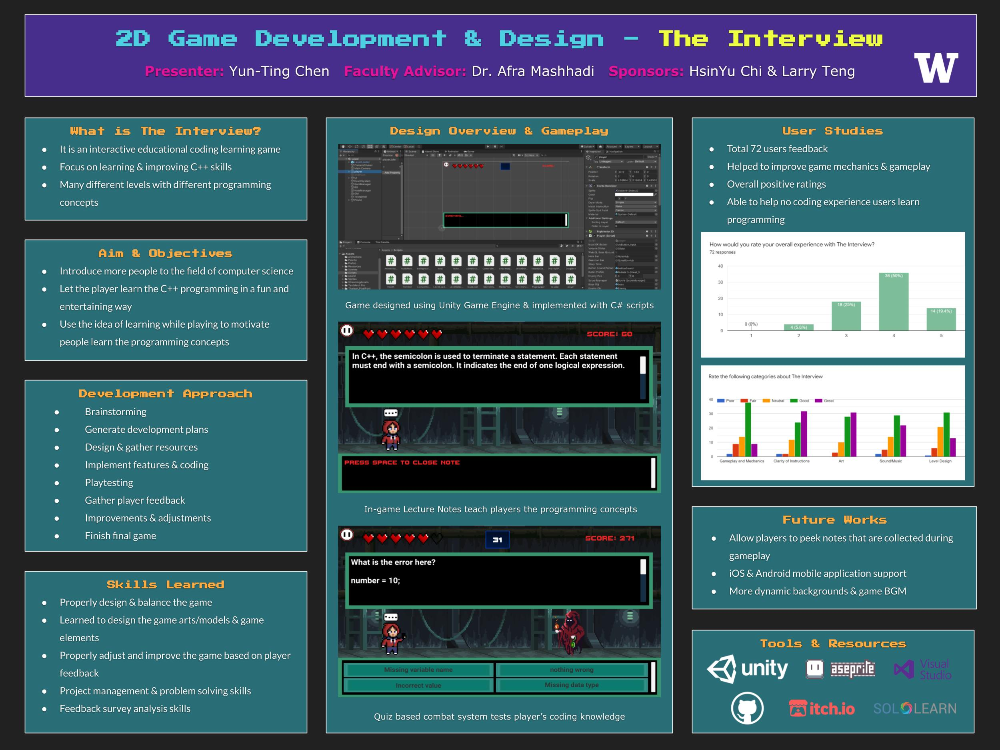

Division of Computing & Software Systems
March 19, 2021
Yun-Ting Chen
2D Game Development & Design - The Interview
Individual Project - Student Defined
Advisor: Dr. Afra Mashhadi
Abstract

View full-sized poster